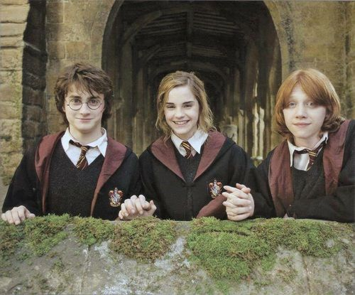

Сайт о Гарри Поттере
Золотое трио
Золотое трио — дружба между Гарри Поттером, Роном Уизли и Гермионой Грейнджер из фэндома «Гарри Поттер».

Эта троица впервые встретилась в Хогвартс-экспрессе, когда Гермиона искала пропавшую жабу Невилла, Тревора. В Хогвартсе их всех распределили в Гриффиндор. Хотя Гарри и Рон уже были лучшими друзьями в этот момент, они всё ещё не ладили с Гермионой. Гермиона последовала за Гарри и Роном, когда они покинули гриффиндорскую башню, чтобы сразиться с Драко Малфоем (что, в действительности, было попыткой Драко втянуть Гарри и Рона в неприятности, так как он так и не появился). Они сбежали от смотрителя Аргуса Филча в коридор третьего этажа, где столкнулись с трёхголовым псом Пушком. Они быстро убежали, и только Гермиона заметила, что собака стоит на люке. В тот год, на Хэллоуин, Гермиона провела весь день в слезах в женском туалете, не подозревая, что горного тролля выпустили на свободу. Когда Квиррелл сказал всем, что в подземелье тролль, Гарри и Рон бросились в туалет, чтобы спасти Гермиону. Они заметили там тролля и победили его. Когда прибыли профессора, Гермиона прикрыла мальчиков, сказав, что сама пыталась бороться с троллем. С тех пор Гермиона была лучшей подругой этих двоих, и это время становления троицы стало последним. Эта троица провела свои годы в Хогвартсе вместе, разгадывая тайны в течение этих лет и часто приводя к спасению школы. У них были споры, например, когда Гарри и Рон не ладили, когда Гарри был выбран на Турнир Трёх Волшебников, но в конце концов они всегда мирились. Эти трое были основателями отряда Дамблдора, организации, которая учила, как защищаться от тёмных искусств в тайне, поскольку уроки Долорес Амбридж ничему их не научили. На седьмом году троица не отправилась в Хогвартс, а вместо этого они провели год в поисках крестражей. Гарри и Гермиона уже были близки с семьёй Уизли в школьные годы, и они стали официальными членами семьи, когда Гермиона вышла замуж за Рона, а Гарри женился на младшей сестре Рона, Джинни.
Золотое трио включает в себя Гарри, Рона, и Гермиону.
Гарри Поттер
Гарри Джеймс Поттер (англ. Harry James Potter) — литературный персонаж, главный герой серии романов английской писательницы Джоан Роулинг. На одиннадцатый день рождения, Гарри узнаёт, что является волшебником и ему уготовано место в школе волшебства «Хогвартс», в которой он будет практиковать магию под руководством директора Альбуса Дамблдора и других школьных профессоров. Также Гарри обнаруживает, что он уже известен во всём магическом сообществе романа, и что его судьба связана с судьбой Волан-де-Морта, опасного тёмного мага, убившего среди прочих и его родителей — Лили и Джеймса Поттер.

Рон Уизли
Рональд Билиус «Рон» Уизли (англ. Ronald Bilius «Ron» Weasley) — один из главных персонажей Поттерианы, друг и одноклассник Гарри Поттера и Гермионы Грейнджер, член Золотого Трио. Младший сын в семье Уизли.
Обладатель специальной награды Хогвартса «За заслуги перед школой», полученной в 1993 году за спасение школы от чудовища Тайной комнаты — василиска.

Гермиона Грейнджер
Гермиона Джин Грейнджер (англ. Hermione Jean Granger) — одна из главных героинь Поттерианы, подруга и однокурсница Гарри Поттера и Рона Уизли, член Золотого Трио. Единственная дочь мистера Грейнджера и его жены.
В одиннадцать лет девочка узнаёт, что на самом деле она является волшебницей и зачислена в Хогвартс. В этой Школе магии и волшебства она попадает на факультет Гриффиндор, на котором учатся также Гарри Поттер, Рон и Джинни Уизли (на курс младше), её лучшие друзья. Так или иначе, она играет важную роль во всех событиях, которые происходят в жизни Гарри. Гермиона, по всей видимости, самая старшая среди своих одноклассников — она родилась 19 сентября 1979 года и не могла поступить в Хогвартс годом раньше, так как ученику на момент поступления должно быть полных одиннадцать лет. Большинство же её одноклассников родились в 1980 году.
Гермиона очень любит учёбу и уделяет ей много времени. Иногда она бывает слишком высокомерной и чрезмерно гордится своими успехами в учёбе. Она честолюбива, на уроках всегда старается ответить первой и выделиться своими знаниями, за что многие не без оснований считают её «всезнайкой» и «ботаничкой». В глазах окружающих она со своим фанатичным стремлением к порядку и дисциплине выглядит излишне «правильной» и занудной, и за это над ней часто смеются. Однако первое впечатление о ней оказывается неверным. Действительно, соблюдение формальных правил и успехи в учёбе для неё много значат, но можно со всей уверенностью сказать, что для неё существуют гораздо более значимые ценности и идеалы.

Другие главные герои
Также к главным героям можно отнести: Джинни Уизли, Рубеус Хагрид, Альбус Дамблдор, Фред и Джордж Уизли, Северус Снейп (Снегг), Невилл Лонгботтом (Долгопупс), Драко Малфой, Волан-де-Морт, Люциус Малфой и Сириус Блэк.
Основные семьи франшизы
Основными семьями франшизы являются: Поттеры, Уизли, Малфои, Блэки, Дамблдоры.
наверх